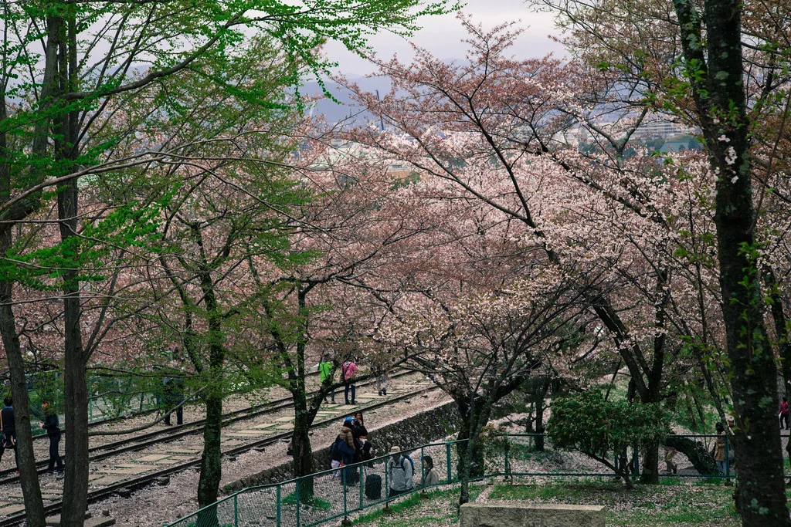

01
桃園直飛關西，今晚住進京都
3/29（一）Arrival · Kyoto
抵達移動日直飛關西規劃直達飯店京都第 1 晚
出發前
桃園機場集合
帶著春日旅行的期待，從桃園出發。
去程
桃園 → 關西
規劃桃園直飛關西，展開京都與白濱的六日旅程。
抵達後
入境、領行李，再專車往京都
抵達關西後，搭乘專車前往京都，沿途慢慢切換旅行心情。
晚間
直接入住，讓第一晚簡單一點
第一晚以入住與休息為主，把精神留給明天的京都春色。
餐食方向｜出發前用餐・抵達後輕食
住宿｜京都｜THE MITSUI KYOTO 候選

往年春景參考；京都的花廊留給接下來的賞櫻時光。